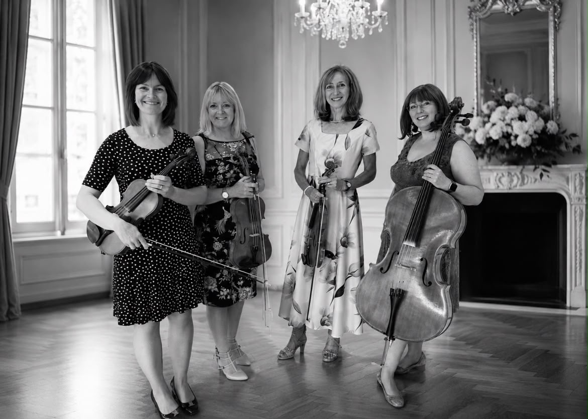

“The music was absolutely beautiful and made the ceremony feel so personal. We still talk about the moment we heard our chosen song as we walked in.”Aoife & Ciarán · Belfast
01 · About
Music for moments that matter
Loose Strings is a Belfast-based string quartet made up of two violins, viola and cello, available for weddings, civil partnerships, parties and other special occasions.
The quartet's repertoire spans the Baroque, Classical and Romantic periods, alongside much-loved music from musicals, films and popular artists.
From the moment your guests arrive to the ceremony, drinks reception or wedding breakfast, live strings can create an elegant and personal atmosphere that becomes part of the memories of your day.

02 · Repertoire
Sample set list
We will work with you to create the perfect soundtrack to your special day. Choose from timeless classical favourites, romantic film themes, contemporary pop, Irish favourites and songs that simply mean something to you. If your favourite isn't on the list, ask us — we'd be delighted to discuss it.
- Canon in D — Pachelbel
- A Thousand Years — Christina Perri
- All of Me — John Legend
- At Last — Etta James
- Can't Help Falling in Love — Elvis Presley
- Chasing Cars — Snow Patrol
- Hallelujah — Leonard Cohen
- Here Comes the Sun — The Beatles
- Here, There and Everywhere — The Beatles
- How Long Will I Love You — Ellie Goulding
- I Don't Want to Miss a Thing — Aerosmith
- Isn't She Lovely — Stevie Wonder
- La Vie En Rose — Édith Piaf
- Love Me Tender — Elvis Presley
- Make You Feel My Love — Adele
- Moon River — Henry Mancini
- Perfect — Ed Sheeran
- She — Elvis Costello
- Shallow — Lady Gaga & Bradley Cooper
- Stand by Me — Ben E. King
- Take My Breath Away — Berlin
- Tenerife Sea — Ed Sheeran
- The Book of Love — Peter Gabriel
- The Greatest Day — Take That
- Unchained Melody — The Righteous Brothers
- Viva La Vida — Coldplay
- What a Wonderful World — Louis Armstrong
- Wildest Dreams — Taylor Swift
- Wonderful Tonight — Eric Clapton
- You Are the Reason — Calum Scott
- Young and Beautiful — Lana Del Rey
- You've Got the Love — Florence + The Machine
03 · Testimonials
Kind words
“Loose Strings were wonderful from start to finish. They helped us choose the music, were completely professional and created such a lovely atmosphere for our guests.”Charlotte & James · Lisburn
“We wanted a mixture of classical music and a few Indian favourites, and the quartet were so accommodating. The music during our drinks reception was one of the highlights of the day.”Priya & Arjun · Ards
“Having live strings at our wedding was something we had always dreamed of. The music was elegant, warm and completely inclusive — it set the tone for the whole day.”Daniel & Michael · Belfast
04 · Pricing
Choose your music
Ceremony
From £470A beautiful live soundtrack for your ceremony.
- Music as guests arrive
- Your chosen entrance and exit music
- Music during the signing of the register
- Hymns can be accommodated where appropriate
Ceremony + Drinks Reception
From £710Live music throughout your ceremony and drinks reception.
- Everything included in the ceremony package
- Live background music during your drinks reception
- A selection tailored to you and your guests
Full Wedding Day
From £1,030Music for the ceremony, drinks reception and wedding breakfast.
- Music across the key parts of your day
- Personalised repertoire
- Ideal for couples who want live strings throughout
Reception / Special Event
BespokeA tailored package for drinks receptions, parties, anniversaries and other celebrations.
- Flexible playing time
- Music selected around your event
- Travel and additional requirements discussed in advance
05 · Contact
Let's make it memorable.
Tell us about your date, venue and the music you have in mind. We'd love to help you create a soundtrack that feels completely personal to your day.
Based in
Belfast, Northern Ireland
Email
YOUR-EMAIL-HERE
Phone
YOUR-PHONE-HERE
Social
Facebook & Instagram